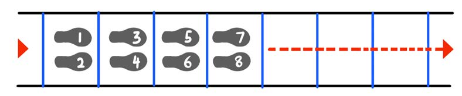
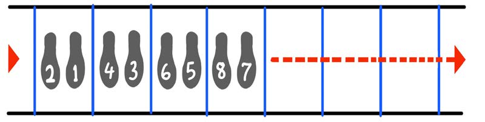
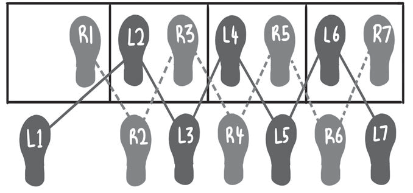

Figure 9: Stepping with two feet into the agility ladder
4.
Turn to the right, step with both feet into each box. Then, move to the next box side to side with one foot in front each time.

Figure 10: Stepping into the agility ladder forward using one foot at a time
5.
Place your back foot into the first box and the front foot outside it. Then, remove the outside foot to the next box while the inside one goes outside the second box.

Figure 11: Stepping into the agility ladder by alternating feet